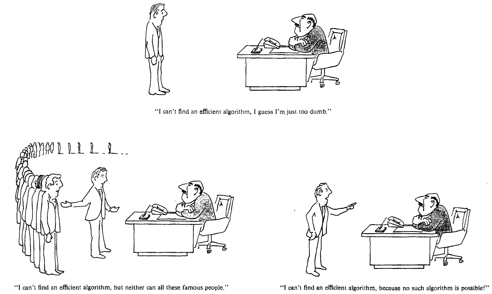
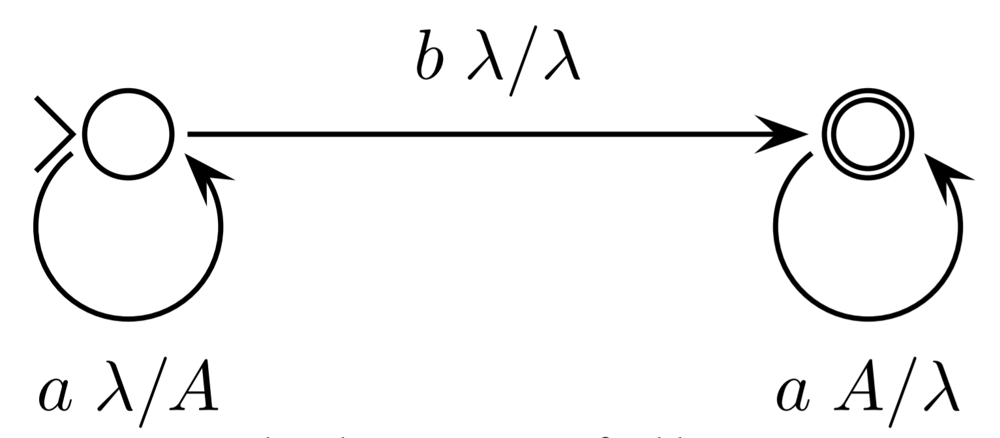

COSC341
Theory of Computing
Alex Gavryushkin
2019 Semester 1
Table of contents
- Lecture 1: Introduction
- Lecture 2: Sets, relations, functions
- Lecture 3: Cardinality
- Lecture 4: Finite state automata
- Lecture 5: Non-deterministic automata
- Lecture 6: NFA = DFA
- Lecture 7: Pumping lemma
- Lecture 8: Pushdown automata and context free grammars
- Lecture 9: Regular languages
- Lecture 10: Classification of languages, pumping Lemma 2
- Lecture 11: Turing Machines
- Lecture 12: Turing Machines
- Lecture 13: Turing Machines
Handouts
Information
- COSC341 website
- Assessment
- Assignment 1: 10% due Thursday 28 March
- Assignment 2: 10% due Friday 29 April
- Assignment 3: 10% due Friday 24 May
- Final exam: 70% on TBA
Lecturer
 GitHub: @bioDS
GitHub: @bioDSTwitter: @bioDS_lab
Lecture 1
Introduction
Who cares about theory of computing?
I do!

ML = Machine Learning
CoSt = Computational Statistics
AS = Applied Statistics
Who cares about theory of computing?
You do!
Garey and Johnson. Computers and Intractability.
Why biological data science?
Because the skills are highly transferable:
- Nosy data
- Visualisation
- Communication
- High-performance computing
Why is it suddenly a thing?

Sets
A set is a collection of objects, completely determined by the objects. Two sets are equal if they contain the same objects.$X = \{1, 2, 5\} = \{2, 5, 1\} = \{5, 2, 1, 5, 1\}$
$X = \{x \mid P(x)\}$, where $P(x)$ is a logical condition on $x$.
$\mathbb N = \{0, 1, \ldots \}$
$X = \{x \mid (\exists y \in \mathbb N) x = y^2\} \stackrel{?}{=} \{x \mid x = y^2\}$
$9 \in X?$
Empty set
$\varnothing$
is a set!
You will forget this. Yes, you.Operations on sets
ML = Data $\cap$ Algorithms
(Statistics$\setminus$DS) $\cap$ Algorithms $\neq \varnothing$
$\overline{\mbox{Data} \cup \mbox{Algorithms} \cup \mbox{Statistics}} = ?$
Lecture 2
Sets, relations, functions
Subsets, ordered tuples, relations, and functions
$A \subseteq B \iff (\forall x) (x \in A \Rightarrow x \in B)$
$\mathcal P(A) = \{X \mid X \subseteq A\}$
$(a, b) = (c, d) \iff (a = c~\&~b = d)$
$A \times B = \{(a, b) \mid a \in A, b \in B\}$
$P \subseteq A \times B$ is a relation (from $A$ to $B$, or on $A$ if $A = B$)
$f \subseteq A \times B$ is a function if $(f(a) = b ~\&~ f(a) = c) \Rightarrow b = c$
Types of functions
Let $f : A \to B$. The function $f$ is called
injective if $f(a) = f(b) \Rightarrow a = b$
surjective if $(\forall y \in B)(\exists x \in A)f(x) = y$
bijective if $f$ is injective and surjective.
Molecular biology: crash course

Classical genetics

Modern genomics
Reality

Partitions and equivalence relations
$A = B \sqcup C$ is a partition if $A = B \cup C$ and $B \cap C = \varnothing$
A relation $\sim$ on $A$ is called an equivalence relations if $\sim$ is:
- Reflexive $(\forall x \in A)~x \sim x$
- Symmetric $(\forall x, y \in A)~(x \sim y \Rightarrow y \sim x)$
- Transitive $(\forall x, y, z \in A)~(x \sim y ~\&~ y \sim z \Rightarrow x \sim z)$
Theorem 1
A partition of a set $A$ is the same thing as an equivalence relation on $A$.In other words: Let $A$ be a set. Then
- A partition $A_1 \sqcup A_2 \sqcup \ldots$ of the set $A$ is defined by an equivalence relation on $A$.
- An equivalence relation $\sim$ on the set $A$ defines a partition on $A$.
Lecture 3
Cardinality
Set $A$ has smaller cardinality than $B$ if there exists a (total) injection $f : A \to B$, written $|A| \leqslant |B|$.
Theorem: $|A| = |B| \iff (|A| \leqslant |B| ~\&~ |B| \leqslant |A|)$.
$|\mathbb N| \stackrel{?}{=} |\mathbb Z| \stackrel{?}{=} |\mathbb Q| \stackrel{?}{=} |\mathbb R|$
Theorem 2
$|\mathbb N| < |\mathbb R|$Lecture 4
Finite state automata


DFA
A deterministic finite state automaton, $M$, consists of:
- A finite set, $Q$, of states
- A finite set $\Sigma$ called the alphabet
- A total function $\delta: Q \times \Sigma \to Q$ called the transition function
- A distinguished state $q_0 \in Q$ called the initial state
- A subset $F \subseteq Q$ called the final or accepting states.
Given a word $w = w_0 w_1 \dots w_{n-1} \in \Sigma^*$ the computation carried out by $M$ on input $w$ is a sequence of states $q_0, q_1, q_2, \dots, q_n$ defined as follows: \[ q_1 = \delta(q_0, w_0), \: q_2 = \delta(q_1, w_1), \: \dots ,\: q_n = \delta(q_{n-1}, w_{n-1}) \]
We say that $M$ accepts or recognises $w$ if $q_n \in F$ and otherwise it rejects $w$.
The language of $M$, $L(M)$ is just the set of strings in $\Sigma^*$ that $M$ accepts.
Lecture 5
Non-deterministic automata
NFA
Relax the definition of the transition function to become a transition relation. \[ \delta \subseteq Q \times \Sigma \cup \{\lambda\} \times Q \]
$\{ab\}$ in English alphabet
Examples
Design an automaton that recognises the following languages in alphabet $\{a,b\}$
$L_1 = \{w | w = xaaybbbz, \mbox{ where } x,y,z \in\{a,b\}^*\}$
$L_2 = \{w | w \mbox{ contains $aa$ or $bbb$}\}$
$L_3 = \{w | w \mbox{ contains $aa$ and $bbb$}\}$
Lecture 6
NFA = DFA, pumping lemma
Theorem 3
The classes of languages recognised by DFA and NFA coincide.Theorem 3
The classes of languages recognised by DFA and NFA coincide.Proof: Go to the lecture (or read in the notes).
Lecture 7
Pumping lemma
Pumping lemma
Let $L$ be an automatic language.
Then there exists a positive integer $k$ such that if $z \in L$, $|z| \geq k$ then for some $u$, $v$, and $w$:
$
\begin{eqnarray*}
z &=& u \cdot v \cdot w \\
|u| + |v| &\leq& k \\
|v| &>& 0 \\
uv^iw &\in& L \quad \mbox{for all $i \geq 0$}.
\end{eqnarray*}
$
Proof: Haven't we just proven it?
$L = \{w \in \{a, b\} \mid \mbox{$w$ contains an odd number of $a$'s}$
$\mbox{and an even number of $b$'s}\}$
Lecture 8
Pushdown automata and context free grammars
- A finite set $Q$ of states
- A finite set $\Sigma$ called the input alphabet (lower case letters)
- A finite set $\color{blue}{\Gamma}$ called the stack alphabet (upper case letters)
- A relation $\delta \subseteq Q \times \Sigma \cup \{\lambda\} \times \color{blue}{\Gamma \cup \{\lambda\}} \times Q \times \color{blue}{\Gamma \cup \{\lambda\}}$
called the transition relation - A distinguished state $q_0 \in Q$ called the initial state
- A subset $F \subseteq Q$ called the final or accepting states.
The stack should be empty to accept a string!
- A finite set $V$ of nonterminals (or variables)
(upper case letters) - A finite set $\Sigma$ called the alphabet (or terminals)
(lower case letters), $\Sigma \cap V = \varnothing$ - A finite set $P$ of production rules,
which is a subset of $V \times (V \cup \Sigma)^*$ - A distinguished $S \in V$ called the start symbol
Examples
$S \to aS, S \to bS, S \to \lambda$
$S \to aS, S \to bT, T \to bT, T \to \lambda$
$\{a^nb^n \mid n \in \mathbb{N}\}$
Theorem
$\mathcal L_{PDA} = \mathcal L_{CFG}$Genome phasing

Schwarz, Roland F., Anne Trinh, Botond Sipos, James D. Brenton, Nick Goldman, and Florian Markowetz. 2014. “Phylogenetic Quantification of Intra-Tumour Heterogeneity.” PLoS Computational Biology 10 (4): e1003535.
Schwarz, Roland F., Anne Trinh, Botond Sipos, James D. Brenton, Nick Goldman, and Florian Markowetz. 2014. “Phylogenetic Quantification of Intra-Tumour Heterogeneity.” PLoS Computational Biology 10 (4): e1003535.
Lecture 9
Regular languages
$\varnothing$; $\lambda$; $x$ for every $x \in \Sigma$.
If $\alpha$ and $\beta$ are regular expressions then so are the following:
$(\alpha\beta)$; $(\alpha \cup \beta)$; $\alpha^*$
The language $L_\alpha$ described by the regular expression $\alpha$ is defined in the following way:
$L_\alpha = \varnothing$ if $\alpha = \varnothing$
$L_\alpha = \{\lambda\}$ if $\alpha = \lambda$
$L_\alpha = \{x\}$ if $\alpha = x$
$L_{\alpha\beta} = \{uv \mid u \in L_\alpha \mbox{ and } v \in L_\beta\}$
$L_{\alpha\cup\beta} = L_\alpha \cup L_\beta$
$L_{\alpha^*} = \{w_1 \ldots w_k \mid w_1, \ldots, w_k \in L_\alpha \mbox{ and } k \in \mathbb N\}$
Language $L$ is called regular if it can be described by a regular expression $\alpha$, that is, there exists $\alpha$ such that $L = L_\alpha$.
Examples
\begin{align*} L_a &= a(a \cup b)^*\\ \\ L_e &= ((a \cup b)(a \cup b))^*\\ \\ L_{bb} &= (a \cup b)^*bb(a\cup b)^*\\ \\ L_{2b} &= a^*ba^*ba^* \end{align*}Lecture 10
Classification of languages, Pumping Lemma 2
Proof: Easy.
Theorem (ii): Automatic languages are closed under
$\cdot$ (concatenation), $\cup$ (union), $\cap$ (intersection),
and $\overline{\phantom a}$ complement.
Proof: Even easier.
Theorem (iii): Context-free languages are closed under
$\cdot$ (concatenation) and $\cup$ (union),
but not $\cap$ (intersection) or $\overline{\phantom a}$ complement.
Proof: Not yet possible — we need a version of the pumping lemma.
Classification of languages
(so far)$\mathcal L_{DFA} = \mathcal L_{NFA} = \mathcal L_{reg} \subset \mathcal L_{PDA} = \mathcal L_{CFG}$
Pumping Lemma 2
Let $L$ be a context free language. There is a positive integer $k$ such that for all $z \in L$ with $|z| \geq k$ we can write $z = uvwxy$ such that: \[ \begin{array}{c} |vwx| \leq k \\ |v| + |x| > 0 \\ uv^iwx^iy \in L \quad \mbox{for all $i \geq 0$}. \end{array} \]$\cdot$ (concatenation) and $\cup$ (union),
but not $\cap$ (intersection) or $\overline{\phantom a}$ complement.
Proof: Super easy now.
Note: However, if $L$ is a context-free language and $R$ a regular language then $L \cap R$ is context-free!
Lecture 11
Turing Machines
Turing machine
- A finite set $\Gamma$ called the alphabet
- A finite set $Q$ of states
- A distinguished state $q_0 \in Q$ called the starting state
- A subset $F \subseteq Q$ of halting states
- A distinguished symbol $\beta \in \Gamma$ called the blank symbol (or the empty cell)
- A partial function $F: (Q \setminus F) \times \Gamma \to Q \times \Gamma \times \{L, R, \varnothing\}$
called the program
Turing machines can be used to formalise all kinds of algorithmic problems, including language recognition, generation, etc.
$a^* b^*$
$\{a^n b^n \mid n \in \mathbb N\}$
Danger zone!
We recommend that you don't scroll past this slide.
Formalising biology
- Let $G$ be the set of binary (quaternary in reality) strings of length $n$.
- Elements of $G$ are called genotypes.
- A function $w: G \to \mathbb R^+$ is called a fitness landscape.
- For $g \in G$, $w(g)$ is called fitness of the genotype $g$.

Scalability: synthetic lethal pairs

How many pairs of genes are there in the human genome?
Gene-gene interactions
Epistasis
is defined as the deviation from the additive expectation of allelic effects: $$u_{11} = w_{00} + w_{11} - (w_{01} + w_{10})$$Understanding three-way interactions
Marginal epistasis?
$\small u_{\color{blue}{0}11} = w_{\color{blue}{0}00} + w_{\color{blue}{1}00} + w_{\color{blue}{0}11} + w_{\color{blue}{1}11} − (w_{\color{blue}{0}01} + w_{\color{blue}{1}01}) − (w_{\color{blue}{0}10} + w_{\color{blue}{1}10})$
Total three-way interaction?
$\small u_{111} = w_{000} + w_{011} + w_{101} + w_{110} - (w_{001} + w_{010} + w_{100} + w_{111})$
Conditional epistasis?
$\small e = w_{\color{blue}{0}00} − w_{\color{blue}{0}01} − w_{\color{blue}{0}10} + w_{\color{blue}{0}11}$
What if no (credible) fitness measurements are available?

Image: Wikipedia
Mutation fitness graph

Ogbunugafor et al. Malar. J. 2016
Rank orders. The simplest case.
$\small u_{11} = w_{00} + w_{11} - (w_{01} + w_{10})$
Exercise: Dyck word algorithm
$$ \begin{align} \small u_{011} =~ & w_{000} + w_{100} + w_{011} + w_{111} − \\ & w_{001} - w_{101} − w_{010} - w_{110} \end{align} $$
$$ w_{111} > w_{011} > w_{101} > w_{010} > w_{000} > w_{110} > w_{100} > w_{001} $$
$$ w_{111} > w_{011} > w_{100} > w_{000} > w_{001} > w_{101} > w_{010} > w_{110} $$
A way to quantify uncertainties!
Crona, Gavryushkin, Greene, and Beerenwinkel. Inferring genetic interactions from comparative fitness data. eLife, 2017.
Connection between rank orders and mutation graphs
$\small u_{11} = w_{00} + w_{11} - (w_{01} + w_{10})$
Theorem. A partial order (e.g. fitness graph) implies epistasis if and only if all linear extensions compatible with the partial order do.
Mutation graph

Mutation graph

Mutation graph

Mutation graph

Mutation graph

Lienkaemper, Lamberti, Drain, Beerenwinkel, and Gavryushkin. The geometry of partial fitness orders and an efficient method for detecting genetic interactions. Journal of Mathematical Biology, 2018.
4. Online algorithms to improve computational performance
- The traditional way is to make the algorithm more efficient
- When the same algorithm has to be re-run routinely, we can economise by making the algorithm slower and doing more!
- This approach is known as online
Online algorithms
Online algorithms
Online algorithms

Online algorithms
Online algorithms
Online algorithms

Online algorithms

Online algorithms

Online algorithms

Homework:
Find an efficient online algorithm to detect genetic interactions from